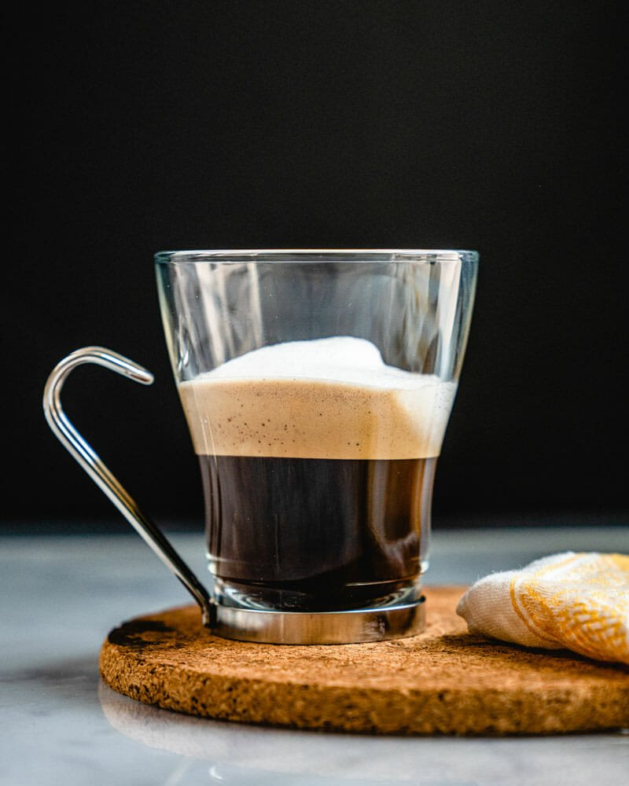
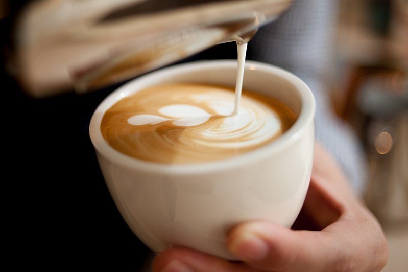

Home | Make Order | Categories | Contact Us | About Us
Espresso
Espresso (/ɛˈsprɛsoʊ/, Italian: [eˈsprɛsso]) is a coffee-brewing method of Italian origin, in which a small amount of nearly boiling water (about 90 °C or 190 °F) is forced under 9–10 bars (900–1,000 kPa; 130–150 psi) of pressure (expressed) through finely-ground coffee beans. Espresso coffee can be made with a wide variety of coffee beans and roast degrees. Espresso is the most common way of making coffee in southern Europe, especially in Italy, Spain, Portugal, Switzerland, Southern France and Bulgaria.

Latte
The term comes from the Italian caffellatte or caffè latte, from caffè e latte, literally "coffee and milk"; in English orthography either or both words sometimes have an accent on the final e (a hyperforeignism or to indicate it is pronounced, not the more-common silent final e of English). In northern Europe and Scandinavia, the term café au lait has traditionally been used for the combination of espresso and milk. In France, café latte is from the original name of the drink (caffè latte); a combination of espresso and steamed milk equivalent to a "latte" is in French called grand crème and in German Milchkaffee or (in Austria) Wiener Melange. 
Cappuccino
Variations of the drink involve the use of cream instead of milk, using non-dairy milk substitutes and flavoring with cinnamon or chocolate powder. It is typically smaller in volume than a caffè latte, with a thicker layer of microfoam.

The name comes from the Capuchin friars, referring to the colour of their habits, and in this context referring to the colour of the beverage when milk is added in small portion to dark, brewed coffee (today mostly espresso). The physical appearance of a modern cappuccino with espresso créma and steamed milk is a result of a long evolution of the drink.